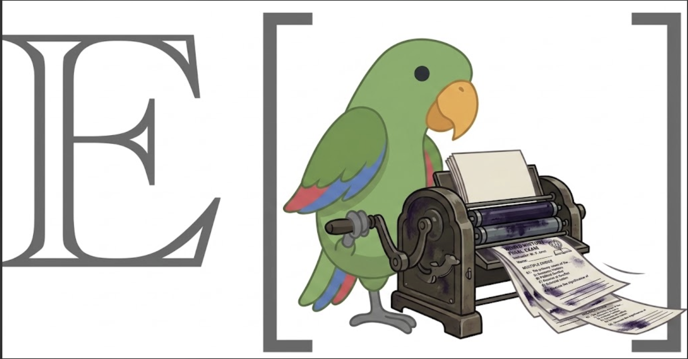

Build exams you can inspect.
Pruefung helps a professor and a coding agent turn course materials into a durable item bank, check questions with an independent panel, field a frozen EDSL survey, and grade responses without hiding the answer key inside the survey.
Version 0.1.6 · Python 3.10+What Pruefung does
Assessment work has several different kinds of truth: source materials, concepts, question wording, answer keys, quality-control evidence, the exact instrument students saw, submitted responses, and final grading decisions. Pruefung keeps each kind in an inspectable file rather than collapsing the whole process into an opaque generation step.
Questions are real EDSL objects. Their answer keys, rubrics, and point values live separately in Pruefung metadata, so the deployed survey cannot reveal them. Exams remain live views over the bank while they are being assembled and become immutable deep copies when deployed.
The workflow
- Register course sources and render only the pages, slides, headings, or Git history needed.
- Define concepts and add validated EDSL questions with private scoring metadata.
- Create a portable QC task, run it with the selected models, and ingest the hash-guarded verdict.
- Assemble an exam, inspect its balance, attach a roster, preview it, and freeze it at deployment.
- Fetch responses, score objective items deterministically, review free text, and export a gradebook.
Install Pruefung
uv tool install git+https://github.com/expectedparrot/pruefung.git
pruefung --helpFor development, clone the repository and install an editable environment:
git clone https://github.com/expectedparrot/pruefung.git
cd pruefung
python -m pip install -e ".[dev]"
pytest -qEDSL and Expected Parrot credentials are used only at the explicit inference and Humanize boundaries. Pruefung never stores API keys.
1. Start a course workspace
mkdir stat-101-exams && cd stat-101-exams
pruefung init --course "STAT 101: Intro to Statistics"The command creates .pruefung/. Commands run from nested directories discover that project by walking upward, much like Git.
JSON is the default interface for agents:
{"ok":true,"command":"init","data":{"course":"STAT 101: Intro to Statistics"},"warnings":[],"errors":[]}Add --human or -H when a professor wants a terminal-oriented rendering.
2. Register and render materials
Registration records provenance and copies local originals. Rendering is separate, so a 90-slide deck need not become context when only one unit matters.
pruefung ingest syllabus.pdf
pruefung source add slides/full-semester.pptx --name slides
pruefung source render slides --slice s41-72
pruefung source add https://stats101.example.edu/notes/ci-handout \
--name ci_handout
pruefung source render ci_handout
pruefung materials -HPruefung also handles DOCX, Markdown, text, transcripts, page slices such as p40-55, heading slices such as h2:Sampling, and Git log/diff sources. Every render has its own content hash.
3. Build the item bank
Concepts provide the coverage vocabulary for the course:
pruefung concepts add sampling_distributions
pruefung concepts add clt --note "weeks 3-4"
pruefung concepts add confidence_intervals
pruefung concepts add p_valuesConsult the machine-readable schema before constructing question files or commands:
pruefung schema question
pruefung schema conceptAdd a multiple-choice item. Answer indices are zero-based, so --answer 2 selects the third option.
pruefung question add --type mcq --name ci_interpretation \
--text "A 95% confidence interval for a population mean is (12.1, 15.9). Which interpretation is correct?" \
--option "95% of the data fall between 12.1 and 15.9" \
--option "The population mean is in the interval with probability 0.95" \
--option "The procedure produces intervals containing the true mean 95% of the time" \
--option "95% of sample means fall between 12.1 and 15.9" \
--answer 2 --points 2 --concept confidence_intervalsFree-text items require an explicit rubric:
pruefung question add --type free_text --name explain_clt \
--text "Explain when and why the central limit theorem is useful." \
--points 4 --concept clt --rubric-file rubrics/clt.md \
--explanation "A strong answer states the conditions and connects repeated sampling to approximate normality."pruefung validate
pruefung ls -H
pruefung coverageWhen three or more questions all use one format, pruefung agent next pauses to ask the professor whether that is intentional or whether the bank should mix multiple choice, checkbox, true/false, and free-text items.
pruefung validate. A changed content hash resets the question to draft and invalidates pending inference results that were built against the previous version.4. Run blind-solve quality control
qc make writes serialized surveys, scenarios, models, a task manifest, and a small runner. It does not call a model.
pruefung qc make
pruefung inference
# Inspect the package before paid execution
ls .pruefung/inference/qc_01
python .pruefung/inference/qc_01/run.py --yes
pruefung qc ingest qc_01
pruefung qc report qc_01 -H
pruefung qc override q001 --decision pass --reason "Professor reviewed the concern" --professor-approved
pruefung ls --status qc_passedThe panel answers each item without seeing its key and flags ambiguity, cues, or a likely miskey. Results can be ingested only while their recorded content hashes still match the bank.
5. Assemble and inspect an exam
pruefung exam create quiz-1 --title "Quiz 1" \
--instructions "You have 20 minutes. Closed book. Answer every question."
pruefung exam add quiz-1 q001 q004 q005 q007 q010
pruefung exam stats quiz-1 -HStatistics report points, estimated duration, type mix, concept coverage, uncovered concepts, QC readiness, and balance warnings. While the exam is building, edits to bank questions are reflected immediately.
Attach a CSV roster with a required email column and optional name and student_id columns:
pruefung exam roster quiz-1 roster.csv
pruefung exam stats quiz-16. Preview, freeze, and deploy
pruefung exam preview quiz-1 -H
pruefung exam preview quiz-1 --web
pruefung exam deploy quiz-1 --dry-run
pruefung exam deploy quiz-1If no roster is needed, use pruefung exam deploy quiz-1 --open --dry-run, then repeat with --open to publish one shared URL.
The real deployment deep-copies every question, applies a consistent option permutation to options and keys, assigns stable exam question names, exports the key-free EDSL Survey, and publishes a private Humanize project. The building exam then becomes immutable.
7. Monitor, grade, and review
pruefung status quiz-1
pruefung grade quiz-1Multiple-choice and true/false items use exact matching. Checkbox items can use all-or-nothing or explicit per-option partial credit. Existing manual overrides are preserved.
When free-text answers remain, create and run a rubric panel package at the same inspectable inference boundary. Disagreement beyond the configured tolerance becomes needs_review for the professor rather than a silently chosen score.
The authoritative JSON gradebook and regenerated CSV live under .pruefung/gradebooks/. Keep these files private: they contain protected student records.
pruefung grade-report quiz-1 -H
pruefung grade-report quiz-1 --anonymize
pruefung post-exam-report quiz-1
pruefung student-report quiz-1 student@example.edu
pruefung student-reports quiz-1The self-contained HTML report is aggregate and contains every frozen question, its options, answer or score distribution, points earned, correct answer or free-text rubric, and the authored explanation. Free-text scores appear after the rubric-judge task has been run and ingested.
Individual and batch instructor reports are printable, Expected Parrot-branded cut sheets. Each section includes the student's response, score, rubric or correct answer, explanation, and the native EDSL grader comments explaining deductions. They contain protected student information and should not be published.
What Pruefung stores
.pruefung/
├── config.json
├── materials/ # originals, Markdown renders, provenance
├── concepts/ # one JSON file per concept
├── questions/ # EDSL object + private scoring metadata
├── exams/ # building or frozen deployed exams
├── inference/ # inspectable make → run → ingest tasks
└── gradebooks/ # protected JSON and CSV recordsOne file per object keeps diffs readable and permits careful concurrent editing. Directory scans are authoritative; generated manifests and exports are caches or artifacts.
Operating principles
| Principle | Practical consequence |
|---|---|
| EDSL-native | Questions are validated and serialized by EDSL, not reconstructed from templates. |
| Key separation | Answers, rubrics, and points never enter the deployed Survey. |
| No hidden inference | Model work happens only through an inspectable package the user runs. |
| Hash guarded | Stale QC or grading results cannot be applied to changed content. |
| Freeze at deploy | The exact assessment seen by students remains auditable afterward. |
| Professor authority | Ambiguous panel grades and exceptional responses remain reviewable. |